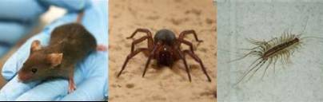
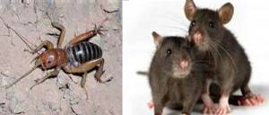

Sustainable solutions 
Vital Pest Management’s goal is to provide the most innovative effective pest management solutions in our industry. We focus on providing sustainable solutions for all types of pest issues. In addition to offering IPM (Integrated Pest Management) services for pests such as cockroaches, rats, mice. Occasional Invaders and ants, Vital has developed and implemented creative solutions for other pests including fruit flies, birds, bats and bed bugs. Our IPM standards and innovative approach were developed through years of experience working with some of the most highly audited businesses and research
facilities in the country. And it’s the “never stop until the problem is solved” attitude that makes
the difference.
Our standards of inspection, proper ID of pests and the most effective treatments and monitoring
to resolve the problem and keep it that way that sets Vital Pest Management apart from all others.
Managed Pest Solutions
Through a Managed Pest Solution, we develop a program specific to your industry’s audit requirements and customer requirements, then we design, implement, track and trend a strategy that will be consistent and provide long term success. We start by eliminating all existing pest activity. Then we set up a preventative program to monitor for any introduced pests and eliminate them as they occur using our environmentally friendly IPM solutions. We prevent pest introduction by making your facility less conducive to pest infestations by communicating structural, storage and sanitation improvements as well as the implantation of a pest sighting log that will reduce the possibilityof pest harbourage and introduction. Then follow up and QA visits begin
with a focus on communication and a collaborative approach that ensures a sustainable long term result.
Service Protocols
Vital Pest Managements Service Protocols are more than actions we take, they are who we are and what we believe and know works.
We use tried and true technique's that have been tested in the field to ensure the best possible long term results.
We track and trend activity and effectiveness with all of our protocol processes, baits, dusts and chemical applications
as well as utilizing scientific studies from our suppliers. Our goal is to use these three qualifications with all of our processes.
• Lowest hazard to humans.
• Lowest environmental impact.
• Maximum effectiveness against target pest.
These Service Protocols provide a sustainable highly effective long term result that allows our Service Specialists to deliver superior results consistently.